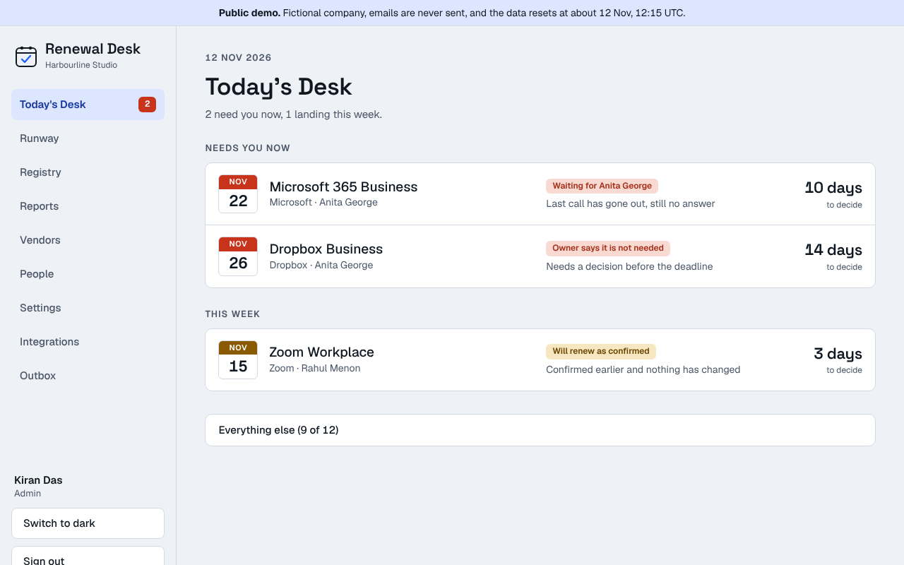
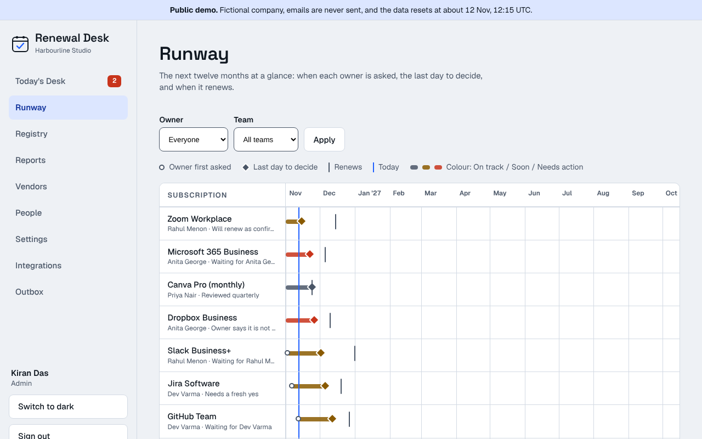

Know what needs attention
Bring approaching decisions, unanswered requests and overdue items into one working view.
Independent product · Product design & development
A renewal is a decision with a deadline, not a date on a calendar.
A subscription renewal workspace designed to help teams ask the right person early, capture a clear decision and act before the last day to cancel.
The problem
A spreadsheet can store a renewal date. A calendar can send a reminder. Neither guarantees that the person responsible has confirmed whether the subscription is still needed, or that the organisation has enough time to cancel or change it.
Bring approaching decisions, unanswered requests and overdue items into one working view.
Connect each subscription to a named owner and make responding simple.
Track the response, follow up when needed and make the recorded decision visible.
Core workflow
The product is built around the cancellation or change deadline, not just the renewal date.
Ask the owner whether the subscription is still required, with the key dates and cost in view.
Follow up and escalate unanswered requests. Silence is not treated as approval.
Bring the decision back into focus near the deadline, using any earlier confirmation carefully.
Keep the last day to cancel or change terms visible so a reminder never becomes the deadline itself.
Product tour
Screenshots below are from the built-in public demo using fictional Harbourline Studio sample data.


Screenshot note: these are illustrative snapshots captured on 12 November 2026. Names and financial figures shown in the interface are fictional demo data, not customer records.
Capabilities
Keep subscriptions, vendors, owners, terms, costs and renewal details together.
View the year ahead, including when owners are asked and when decisions are due.
Collect a response through a simple, one-time action without requiring an owner account.
Record approvals, decisions and changes so the renewal cycle remains explainable.
See dates in the team's calendar and review renewal exposure through reports and exports.
Provide API and webhook capabilities for connecting renewal activity with other business systems.
Product build
Renewal Desk is a personal product initiative. I led the product concept, problem definition, requirements, workflow design, architecture decisions, prioritisation and validation. Development uses AI-assisted coding, with hands-on review and testing.
Defined the problem, target workflow, user roles, product scope and staged roadmap.
Worked through decision dates, owner confirmation, follow-ups, approvals and auditability.
Directed implementation, reviewed changes and tested the product through its working demo environment.
Availability
Renewal Desk is a working product under active development. The application source code is intentionally private while the product is being developed as a potential commercial offering. A hosted public demo will be linked here after its external-access and safety checks are complete.
Interested in the product or a walkthrough? Get in touch.